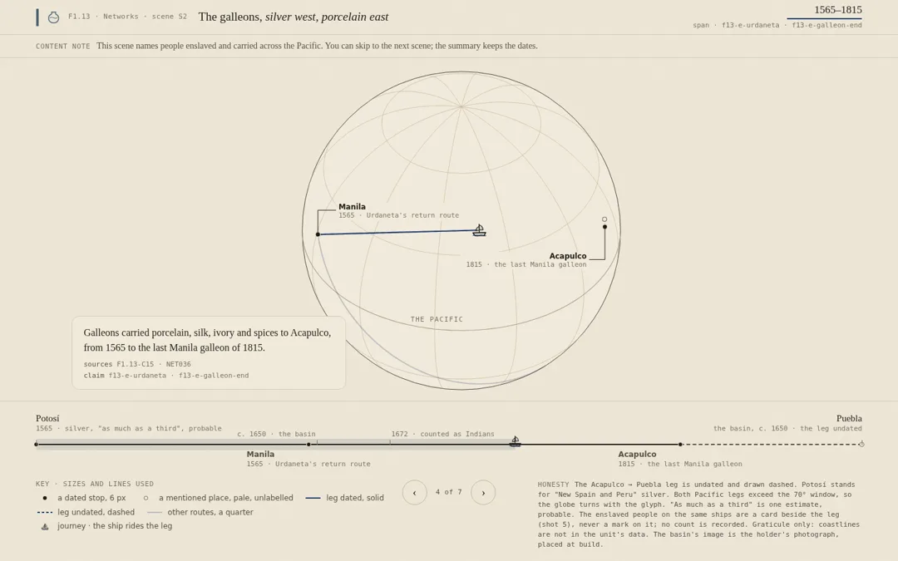
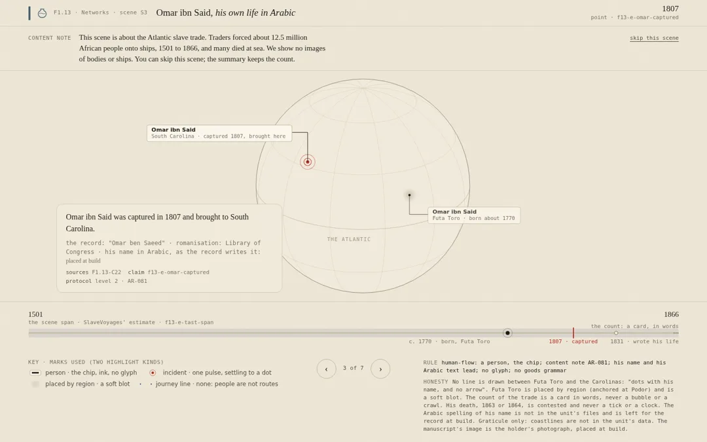
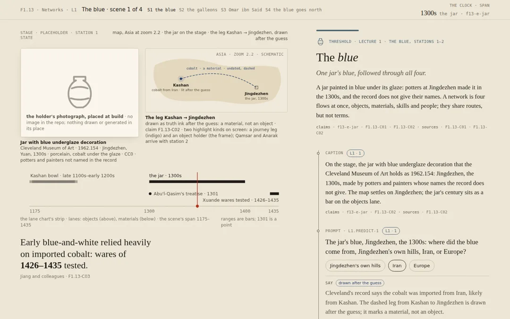
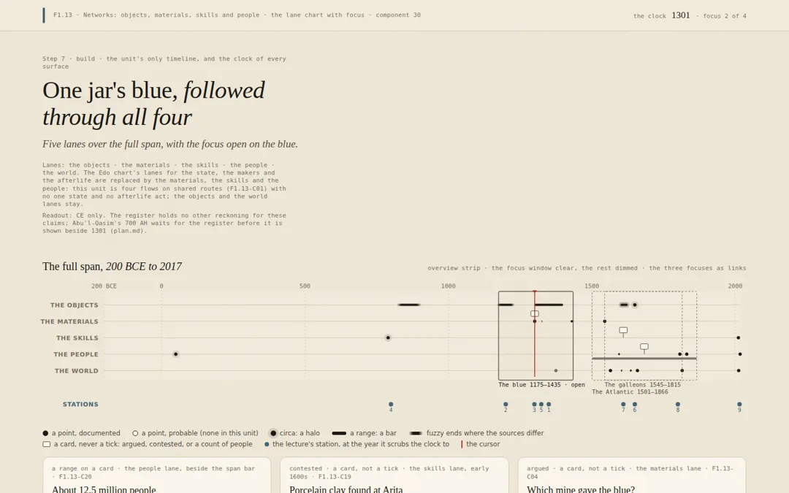
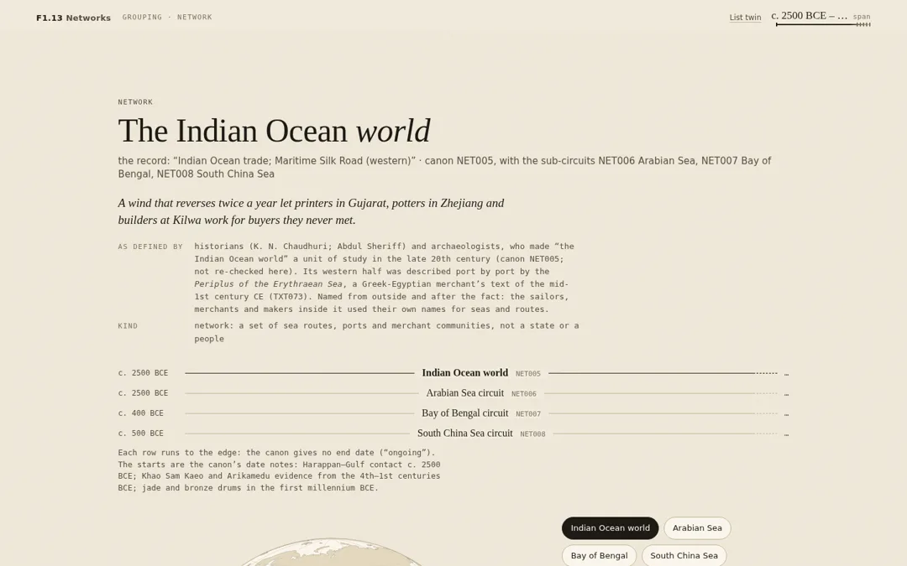
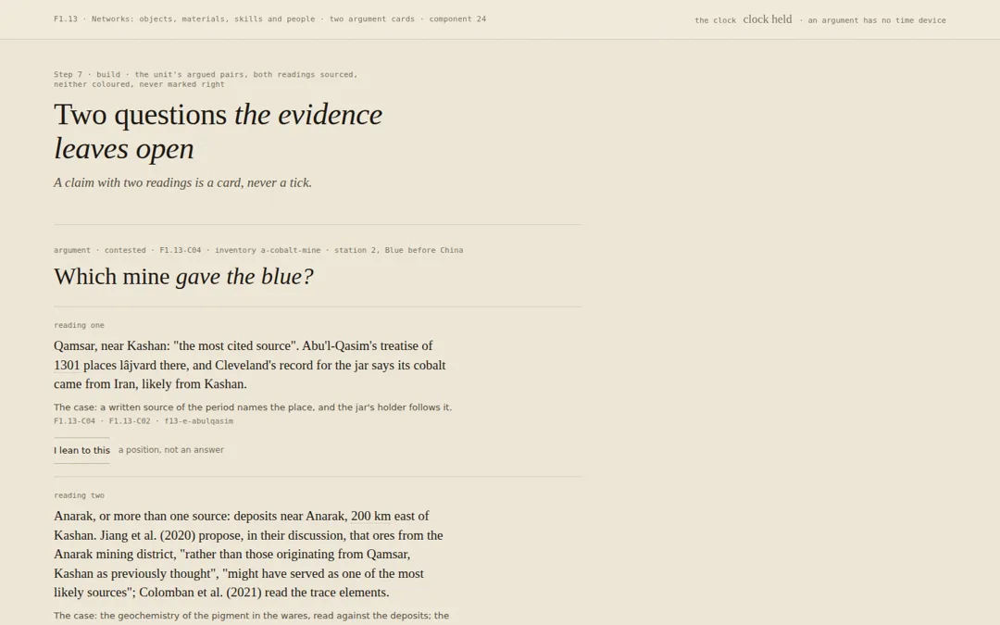

One unit, seven steps
The design language's method run on F1.13 Networks: what the content could carry, what waits, and six pages built from a register the lint could read.
The pages






The second worked example of the design language's method (skills/histories-of-making-design/references/method.md), after Edo. Run on 20 October 2026 on the unit the expandability study found densest. Files in this folder: research.md (step 1), benchmark.md + benchmark.json (step 2), inventory.json (step 3), claims.yaml + lint_claims.py + register.md (step 4), plan.md (step 5); the builds under build/units/f1-13-method/ (steps 6–7): scenes/ (four scenes, two shot mocks), text/ (the lecture as stations, two scenes' beats, the scene sheet), lane-chart/ (the lane chart with focus; the two argument cards), grouping-indian-ocean/ (the network grouping page). lint_build.txt is the final lint over all nine built files.
What the method produced
| Step | Output | Figure |
|---|---|---|
| 1 Research | the unit's sources listed in the method's order; no unit spec yet, so the scope row, the module file, the lecture and the grouping draft stand in | 743 canon rows, 25 register claims, 11 world-set objects, 33 placed points |
| 2 Benchmark | the thresholds table with verdicts and what waits | passes on claims (25), dates (92 %), journeys (5), "as defined by" (100 %); fails on images in hand (0 of 5), coordinates in the canon (0 of 125), protocol levels (0 of 24) |
| 3 Inventory | events, journeys, objects, groups, people, arguments | 25 · 9 · 7 · 5 · 6 · 4 |
| 4 Register | claims.yaml, keyed by the claim; the lint | 94 records (86 documented, 5 probable, 3 contested); protocol levels on 26; the human-flow rule on 16 |
| 5 Choose | page types, the identity (cobalt-grey #4A6472, the jar motif), scripts (Latin, Arabic, Chinese), protocol levels, reckonings (CE only) | the ranking of nine journeys and runs; four scenes chosen |
| 6 Storyboard, lectures, beats | scenes.yaml (4 scenes, 27 shots), storyboard.md, lectures.yaml (9 stations), beats.yaml (2 scenes, 12 beats from 24 captions) | every glyph quoted to its line; the human-flow rule tested on Omar ibn Said's scene |
| 7 Build and lint | six pages at 1440 and 390; the lint over the build | 0 errors, 1 warning (the canon's 1525–1867 against SlaveVoyages' 1501–1866) |
What the lint caught (and would have shipped without it)
A contested death year driving a scene clock; "the 1590s" in a caption against the register's "1592–98"; a decimal cursor position shown as a readout; the Arita sentence without its confidence word; about fifty dates on the Indian Ocean page that the draft walk carried and the register did not; the neighbours' canon spans unregistered. The lecture build itself (lint_lecture.txt) still carries eight errors of the same kinds, which are the lecture author's to fix.
What the run taught the skill (folded in)
- The scene schema gains
content_note(once, before the first shot) andclock.claim; a caption may list two claim ids. - A seventh highlight kind, the people card, for unnamed groups moved by force; never a glyph on a leg.
- The lint skips citation and counting years, scans three-digit years, needs
claimon every mark and route in a lecture build, and reads a grouping page's neighbours through canon-span records. - Grouping drafts must come with their register records: a walk is a list of claims.
- The benchmark's "image in hand" is the binding constraint for a unit with open licences but no fetched photographs; the frames say so and nothing is drawn in their place.
What waits, in order
- The editor freezes
claims-v1(94 records; eight outside sources named inregister.md). - Coordinates for the 125 place rows (a GeoNames match, as the lecture did for 33), then the unit map and the Atlas tier.
- The four open images fetched from the holders; then the object pages.
- The other five grouping walks (Silk Roads, trans-Saharan, galleon, Atlantic, Cape Route), each with its records.
- The Historian pre-read and the reciprocal reviewer before the Atlantic and the Indian Ocean's forced movements are published; S3 and S4 stay held until then.
The benchmark in full
Counts by Claude Fable 5.1, 20 October 2026, from atlas/data/canon/*.csv, atlas/data/register/claims_specs_v1.csv, atlas/data/register/world_set_specs_v1.csv and build/lectures/src/lectures/f1-13.json (benchmark.json beside this file holds the raw counts).
| Measure | Threshold | F1.13 | Verdict |
|---|---|---|---|
| Claims in the register | ≥ 15 | 25 (21 documented, 2 contested, 2 interpretive) | passes; the argument card and the lectures can be built |
| Open objects (CC0 / PD, image in hand) | ≥ 5 | 5 open by licence (4 CC0/PD images not yet in the repo; 1 manuscript) · 0 images in hand | passes on licence, fails on images: object pages and galleries are built as frames that say "the holder's photograph, placed at build"; nothing is drawn or generated in their place |
| Rows with a start date | ≥ 60 % | 685 of 743 = 92 % (end dates 461 = 62 %) | passes; span lists, the lane chart and works walls can be built |
| Rows with coordinates or a gazetteer match | ≥ 50 % of place-anchored rows | canon: 0 of 125 place rows; the lecture's gazetteer places 33 points with a source line each | fails for the unit map; passes for the nine stations' scenes, which use only gazetteer points. The one-colour map of the whole unit and the Atlas unit tier wait for the coordinate fill; the list twin ships |
| Journeys with dated legs | ≥ 1 | 5 (galleons 1565–1815; gold 1324–25; papermaking by the late 700s; Korean potters 1592–98; cobalt by the 1300s with undated legs between dated ends) | passes; scenes can be built |
| Groupings with "as defined by" | 100 % of those shown | 743 of 743 rows carry defined_by; 467 (63 %) carry leaves_out | passes for "as defined by"; a grouping without leaves_out shows the card without that line and is listed for the editor (276 rows) |
| Living-practice rows with a protocol level | 100 % | 24 rows carry a sensitivity flag; 0 carry a level 1–6 | fails: the levels are assigned in claims.yaml for the rows the surfaces use (lenj building PRA143; the Siddi COM203; the Korean potters DIA012; Omar ibn Said's text) before any of them is drawn; the other living-practice rows are not shown until assigned |
What the content can carry now
- The lectures layer (nine stations, already as data) and the beats derived from it.
- The claims register for the unit: 25 register claims plus the dated spans the lecture draws (about 20 more records).
- The lane chart with focus (the unit's spans are dated; three focuses: the blue 1175–1435; the galleons 1565–1815; the Atlantic 1501–1866).
- Four scenes over the lecture's gazetteer (
scenes.md§7 ranking, below). - The grouping page for the Indian Ocean (NET005), from the draft, with the human-flow content note and protocol levels assigned.
- The argument card (the cobalt mine, C04; demand or routes, C14).
- The compare sheet is not needed by this unit's spec.
What waits
- The unit-wide one-colour map and the Atlas unit tier: 125 place rows need coordinates (a gazetteer match against GeoNames is the small job; the lecture already did it for 33).
- Object pages with photographs: the four CC0/PD images need fetching from the holders (not reachable from here); until then, frames with the credit line and a placeholder that says why.
- Grouping pages for the other five networks the lecture names (Silk Roads NET001, trans-Saharan NET010, the galleon NET036, the Atlantic NET035, the Cape Route NET033): the canon rows exist with
defined_by; the walks are not drafted. - Protocol levels for the remaining 20 living-practice rows and the 174 human-flow rows that are not used by the surfaces built here.
- A Historian pre-read and the reciprocal reviewer the scope names for F1.13 before anything on the Atlantic or the Indian Ocean's enslaved people is published (
docs/08-scope-v2§156).
Sources: the course repository (malfalasi-bot/CWB, commit 098a3e5): research_notes/F1.13 method run/, build/units/f1-13-method/, skills/histories-of-making-design/. The holder APIs were not reachable from the sandbox; accessions rest on the register's fact-check of 3 October 2026.